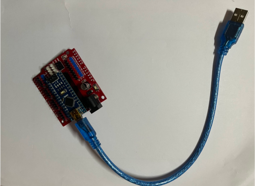
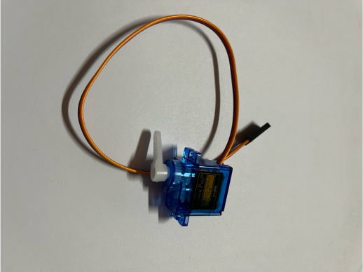

3.Arduino Output
*processing and arduino linkage
*The code is here
*Component
1.Arduino Nano board
2.SG90 Servo
In the processing page, one black ball drops down every two seconds.If three
balls fall in total, the ball stops falling for
five seconds.In addition, the blade of the steering engine controlled by
arduino is rotated 180 degrees to the right for two
seconds, and then rotated 180 degrees to the left to return to the original
position
Processing Code:
import processing.serial.*;
Serial myPort; // 所使用的串行端口
ArrayList<Ball> balls; // 存储小球的列表
int lastTime; // 上一个小球添加的时间
int ballCount; // 记录已掉落小球的数量
void setup() {
size(1920, 1080); // 设定画布大小
balls = new ArrayList<Ball>(); // 初始化小球列表
println(Serial.list()); // 打印可用的串行端口列表
myPort = new Serial(this, Serial.list()[0], 9600); // 打开第一个串行端口
lastTime = millis(); // 记录初始化时间
}
void draw() {
background(255); // 设置背景为白色
if (millis() - lastTime >= 2000) { // 检查是否过去了2秒钟
lastTime = millis(); // 重置计时器
if (ballCount < 3) { // 判断是否已经有三个小球
// 在屏幕的右侧侧边生成新的小球
Ball newBall = new Ball(width - 400, 50);
balls.add(newBall);
}
// 清除已经落出画布的小球，并统计数量
for (int i = balls.size() - 1; i >= 0; i--) {
if (balls.get(i).y > height) {
balls.remove(i);
ballCount++;
}
}
if (ballCount >= 3) { // 当有三个小球掉落时
myPort.write('R'); // 发送字符'R'至Arduino
ballCount = 0; // 重置小球计数
// 暂停发送新小球的生成，等待5秒后再次开始
delay(5000);
lastTime = millis(); // 重置时间以开始新一轮的小球生成
}
}
// 更新并显示在画布中的小球
for (int i = 0; i < balls.size(); i++) {
Ball ball = balls.get(i);
ball.update();
ball.display();
}
}
class Ball {
float x, y;
float speedY = 10; // 小球下落速度
float diameter = 50; // 小球直径
Ball(float tempX, float tempY) {
x = tempX;
y = tempY;
}
void update() {
y += speedY; // 根据速度更新小球位置
}
void display() {
fill(0); // 小球颜色设置为黑色
ellipse(x, y, diameter, diameter); // 绘制小球
}
}
Arduino Code:
#include <Servo.h>
Servo myservo; // 创建舵机对象
int servoPin = 9; // 舵机连接的脚位
void setup() {
myservo.attach(servoPin); // 将舵机绑定到指定脚位
Serial.begin(9600); // 开始串行通信，波特率9600
}
void loop() {
if (Serial.available() > 0) {
char inChar = (char)Serial.read(); // 读取串行输入的字符
if (inChar == 'R') { // 如果接收字符是'R'
myservo.write(180); // 舵机旋转到180度
delay(2000); // 暂停两秒钟
myservo.write(0); // 返回到0度
}
}
}
